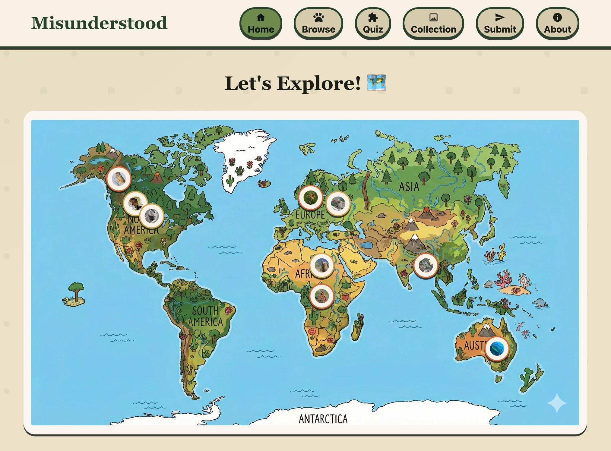
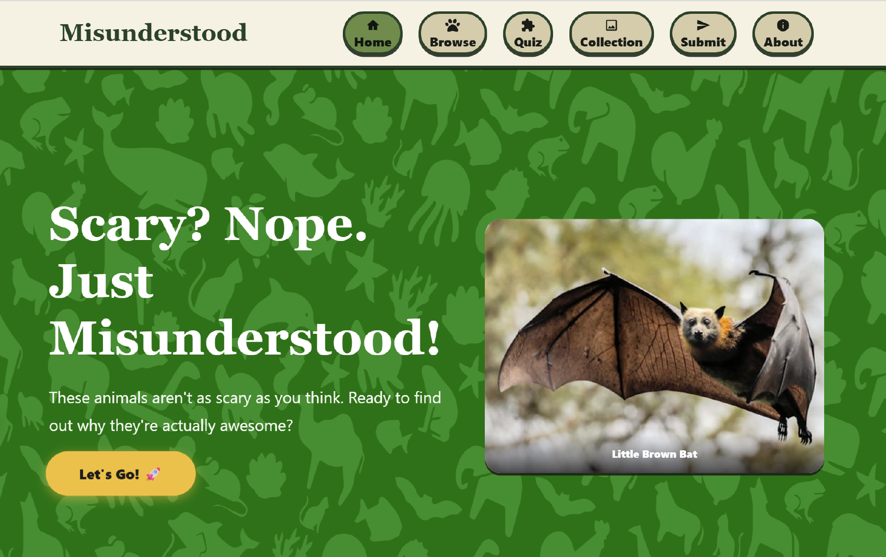

Learning Gap
Empathy and bias awareness are hard to teach in traditional classrooms and often feel abstract to kids.

Go to websiteHow might we help kids recognize bias early and practice empathy in a safe, engaging way?
Empathy and bias awareness are hard to teach in traditional classrooms and often feel abstract to kids.
Existing materials are text-heavy and don’t meet children where they are: interactive, visual, and social.
Warm, friendly colors balanced with high-contrast neutrals.
Rounded type, large buttons, and playful cards support accessibility and delight.
Story-driven scenarios that spark curiosity.
Guided prompts help kids name feelings and perspectives.
Mini challenges reinforce concepts through play.
Share reflections and learn from peers.
Interactive story cards that surface everyday moments of bias.
Short exercises that guide reflection and self-regulation.
Safe space for kids to share insights and encouragement.
Misunderstood transforms empathy education into a playful, guided experience that helps kids recognize bias and practice perspective-taking every day.
